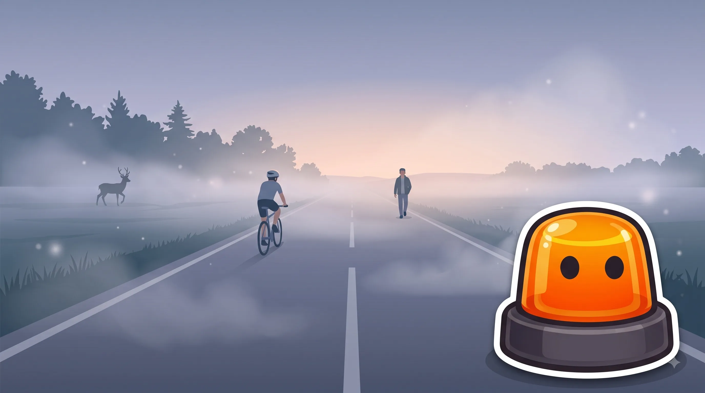
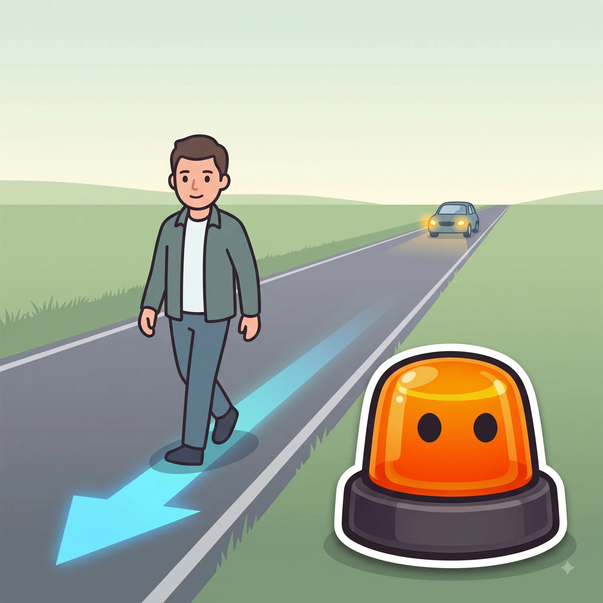

Casos especiales: ciclistas, peatones, animales y meteorología
Las situaciones que no siguen la norma "de manual".
Esquema
Dónde y cómo tienen prioridad al cruzar.


Espacios y cruces reservados para bicicletas.


Cuándo la vía o el tiempo cambian las reglas normales.


Ciclistas en grupo: en paralelo vs en hilera
En paralelo
Máximo 2 en fila, con buena visibilidad
En hilera
Uno detrás de otro, en curvas o poca visibilidad
| En paralelo (máx. 2) | En hilera (uno detrás de otro) | |
|---|---|---|
| ¿Cuándo se permite? | En tramos con buena visibilidad | En curvas, poca visibilidad o si se forma retención |
| ¿Cuántos carriles ocupan? | Como máximo 2 | Solo 1 |
| ¿Dónde se colocan? | Orillados a la derecha | Orillados a la derecha |
Trucos para no olvidarlo
De dos en dos, si se ve bien.
Los ciclistas pueden ir en paralelo, máximo 2, pero deben ponerse en hilera en curvas o si hay poca visibilidad.
Si atropellas un animal, la culpa empieza siendo tuya.
Desde 2014, la responsabilidad recae por defecto en el conductor: eres tú quien tiene que demostrar que no pudiste evitarlo.
La antiniebla trasera no es para presumir.
Solo se usa con niebla densa, lluvia intensa o nieve; encenderla sin motivo deslumbra a quien va detrás.
Confusiones típicas

Ponte a prueba
Otros temas
Señales verticales
La forma y el color ya te dicen el mensaje antes de leer nada.
Velocidad y distancias de seguridad
A más velocidad, la frenada crece mucho más rápido que la reacción.
Señales horizontales y marcas viales
Líneas, flechas y símbolos pintados en el asfalto, con su propio código.
Normas generales de circulación
Las reglas base que deciden por ti cuando no hay ninguna señal.
Adelantamientos
Cuándo, cómo y dónde se puede adelantar con seguridad.
Intersecciones y prioridad de paso
Quién pasa primero en cruces y glorietas.
Autopistas y autovías
Incorporaciones, carriles y normas específicas de vías rápidas.
Alcohol, drogas y fatiga
Tasas máximas y por qué te la juegas más de lo que crees.
El vehículo: mantenimiento y elementos de seguridad
Lo mínimo que debes revisar antes de coger el coche.
Accidentes: actuación y primeros auxilios
Proteger, avisar y socorrer, en ese orden.
Sanciones y puntos del carnet
Cómo funciona el sistema de puntos y qué te los quita.